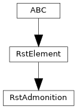
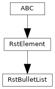
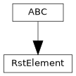
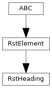
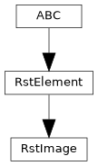
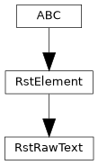
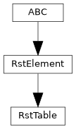

pyTRLCConverter.rst.element
reStructuredText block elements. Each element renders itself into a reStructuredText string. Elements are collected by the RstDocument and rendered once when the output file is written.
Author: Gabryel Reyes (gabryel.reyes@newtec.de)
Attributes
Classes
reStructuredText admonition block element with a label. |
|
Unordered reStructuredText list block element. |
|
Abstract base class for reStructuredText block elements. |
|
reStructuredText heading block element with a label. |
|
reStructuredText image / diagram link block element. |
|
Raw reStructuredText block element passed through unchanged. |
|
reStructuredText table block element in grid format. |
Module Contents
- class pyTRLCConverter.rst.element.RstAdmonition(text: str, file_name: str, escape: bool = True)[source]
Bases:
RstElement
reStructuredText admonition block element with a label.
- render() str[source]
Render the admonition with a label. The text will be automatically escaped for reStructuredText if necessary.
- Returns:
reStructuredText admonition with a label
- Return type:
str
- _escape = True
- _file_name
- _text
- class pyTRLCConverter.rst.element.RstBulletList(values: List[str], escape: bool = True)[source]
Bases:
RstElement
Unordered reStructuredText list block element.
- render() str[source]
Render the unordered list. The values will be automatically escaped for reStructuredText if necessary. The last list value has no newline at the end.
- Returns:
reStructuredText list
- Return type:
str
- _escape = True
- _values
- class pyTRLCConverter.rst.element.RstElement[source]
Bases:
abc.ABC
Abstract base class for reStructuredText block elements.
- class pyTRLCConverter.rst.element.RstHeading(text: str, level: int, file_name: str, escape: bool = True)[source]
Bases:
RstElement
reStructuredText heading block element with a label.
- render() str[source]
Render the heading with a label. The text will be automatically escaped for reStructuredText if necessary.
- Returns:
reStructuredText heading with a label
- Return type:
str
- _escape = True
- _file_name
- _level
- _text
- class pyTRLCConverter.rst.element.RstImage(file_name: str, caption: str, escape: bool = True)[source]
Bases:
RstElement
reStructuredText image / diagram link block element.
- render() str[source]
Render the diagram link. The caption will be automatically escaped for reStructuredText if necessary.
- Returns:
reStructuredText diagram link
- Return type:
str
- _caption
- _escape = True
- _file_name
- class pyTRLCConverter.rst.element.RstRawText(text: str)[source]
Bases:
RstElement
Raw reStructuredText block element passed through unchanged.
- _text
- class pyTRLCConverter.rst.element.RstTable(column_titles: List[str], rows: List[List[str]])[source]
Bases:
RstElement
reStructuredText table block element in grid format. The column titles are escaped, the row values are taken as is. Multi-line cell values are supported.
- _calculate_widths() List[int][source]
Calculate the maximum width of each column based on titles and row values.
- Returns:
Maximum width per column.
- Return type:
List[int]
- static _render_head(column_titles: List[str], max_widths: List[int]) str[source]
Render the table head. The titles are escaped for reStructuredText.
- Parameters:
column_titles (List[str]) – List of column titles.
max_widths (List[int]) – List of maximum widths for each column.
- Returns:
Table head
- Return type:
str
- static _render_row(row_values: List[str], max_widths: List[int]) str[source]
Render a table row. The values are taken as is. Multi-line values are supported.
- Parameters:
row_values (List[str]) – List of row values.
max_widths (List[int]) – List of maximum widths for each column.
- Returns:
Table row
- Return type:
str
- render() str[source]
Render the table in grid format.
- Returns:
reStructuredText table
- Return type:
str
- _column_titles
- _rows
- pyTRLCConverter.rst.element._UNDERLINE_CHARS = ['=', '#', '~', '^', '"', '+', "'"]